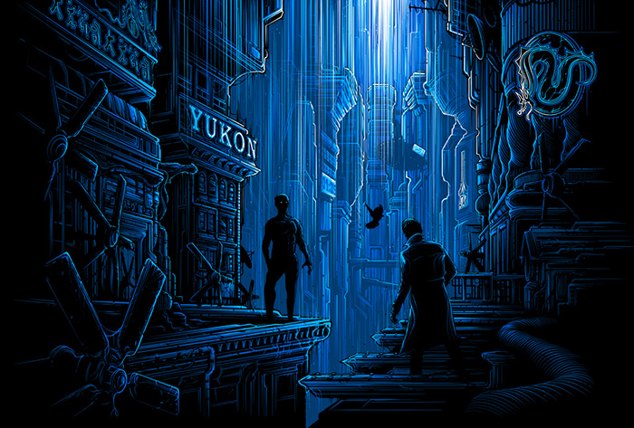

Novel & Adaptation
Writers often choose a situation specifically to illustrate their points, but a very similar premise can be used to prove either side of an argument with equal effectiveness. Philip K. Dick's novel, "Do Androids Dream of Electric Sheep?", inspired the much more well-known film "Blade Runner". Both works involve the same topics: androids hiding on Earth, humans hunting them down, and the shades of gray involving the distinction between man and machine. Although some of the characters and plot elements remain relatively unchanged, the film drastically alters the style and presentation to support a view almost completely contrary to that of the book.
Since the movie was adapted from the book, it is no surprise to see that there are certain similarities between the respective plots. Androids (or "replicants" in the movie) are biomechanically engineered humanoids that have been outlawed on a harsh futuristic Earth. After several escape from the colonies, it is the job of Rick Deckard to hunt and "retire" them. From this basic starting point, however, both pieces move in different directions. The movie maintains its focus on the primary conflict and seems a bit more concerned with why the androids have returned. The novel goes deeper into Deckard's personal life and takes the opportunity to touch on the social aspects of its futuristic world. The two plots diverge and position themselves to uphold their respective attitudes.
In addition to the plot, characters are also altered, renamed, and, in some cases, removed from the story entirely. Since Dick wanted to examine Deckard's social situation more closely, he required more characters. It would be foolish to include them in the movie when they do not serve a real purpose in the modified storyline. In the book, Deckard's wife satirized life in the American home. The film deliberately left Deckard single to emphasize his loner status and allow for a more acceptable relationship between him and Rachel, a female replicant. Buster Friendly, the ubiquitous entertainment personality that Dick used to parody modern commercialism, also made no appearance in "Blade Runner." Phil Resch, an almost unfeeling colleague of Deckard's, deserves to be mentioned for being another among those left out. The most significant character omission, however, is unquestionably Mercer. Mercer is a religious figure whose doctrine includes both pain and empathy. "Mercerism" is not only an exploration of religion in society, but the ideals are the primary vehicles in which Dick introduces his definition of humanity.
Perhaps even more conspicuous than both plot and character changes, however, is the radical shift in both presentation and tone. The most obvious difference is the switch to film for "Blade Runner." This allowed director Ridley Scott to visually influence viewers but at the same time limited his scope. The film embodied the gritty nature of a brutal metropolis. The book also stressed the scene of urban decay, but at times, things were rather light and even humorous. Indeed, the opening scene at Deckard's apartment with his wife and their emotion generator is a prime example of Philip K. Dick's particular brand of humor. The book is sprinkled with the mind-bending twists and confusion that have become synonymous with the author. Where Dick uses satire, however, Scott chooses to use abstract symbolism. Many scenes were even cut from the original release due to their ambiguous relevance. The film becomes a darker, neo-noir take on the novel's theme, but loses the feeling of the original author's style.
All of the aforementioned revisions and removals ultimately lead to a different take on the basic question being asked: what is and is not human? Initially, the two stories lead the audience to believe that the androids are just as "human" as human beings. There is even the insinuation that the artificial beings are, as is the motto from the movie's Tyrell Corporation, "More Human Than Human." Whereas the movie ends on this particular note, Dick switches it up one more time. Instead of falling in love with Rachel and living out the storybook ending, Deckard is used by the android and subjected to the severe logic of artificial intelligence. This is a much more powerful statement. The film views androids and the possibility that they too can experience human emotions. Dick recognizes these emotions as inherently not human. The novel is more of an outlook on humanity, and the point is made that people can sometimes act like machines rather than the other way around. These two respective views are similar without being the same, with neither requiring nor being exclusive of the other. In the end, it is obvious that both are amazing individual science fiction pieces rather than a retelling of the same story.
Written by Jeffrey James Oleniacz